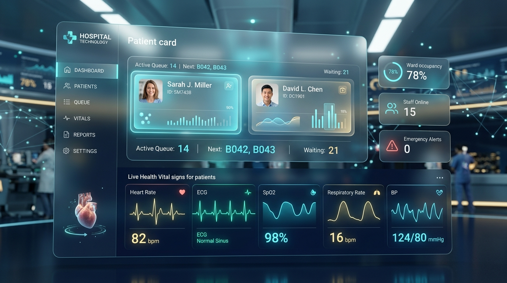

⚡ Never Wait in a Clinic Again
Find Care Near You.
Take Tokens Remotely.
Walk In Right on Time.
Eliminate unnecessary hospital travel and hours wasted in crowded waiting rooms. Find real-time bed and OPD availability, get your digital token from your couch, and receive an automated "Leave Home Now" alert when your doctor is ready.

Live Queue Tracker
● REAL-TIME SYNC
Your Token
#20
Now Serving
#14
Est. Wait
48m
Verified Healthcare Facilities
Real-time queue tracking, verified doctor schedules, and remote token booking